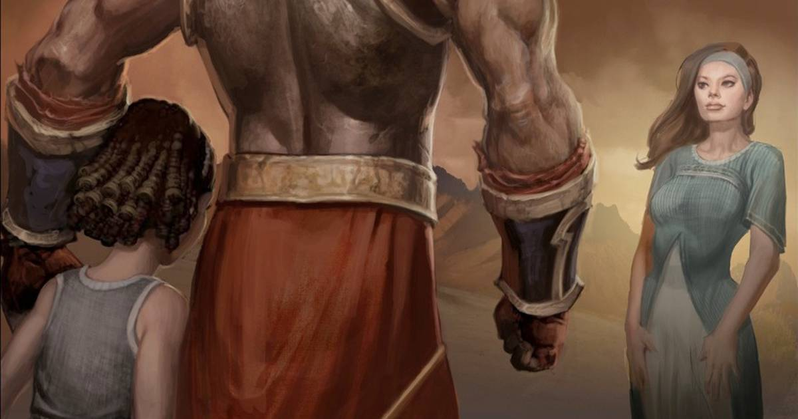

Kratos, o Deus da Guerra
Mais do que o Deus da Guerra, Kratos se destaca desde a infância e hoje passa lição valiosa sobre as divindades antigas
O nascimento de Kratos
Em uma de suas buscas por prazer,
Zeus acabou tendo uma noite de amor com uma grega chamada
Callisto. O fruto da relação acabou dando vida a
Kratos. Mas ele não foi a única criança que veio do ventre da mulher, visto
que o grande rei do Olimpo voltou a visitá-la, e dessa segunda relação nasceu Deimos, irmão do
protagonista de God of War.
Deimos nasceu com uma marca vermelha em seu corpo e chamou
atenção por ser um filho do maioral do Olimpo. Desde então, ele foi observado de perto pelos deuses.
A infância de Kratos
Desde pequenos, os espartanos são treinados para se tornarem
guerreiros implacáveis e destemidos. Kratos e Deimos, que ainda tinha marcas
vermelhas espalhadas pelo corpo e já chamava a atenção por suas habilidades em batalha, treinavam e
se esforçavam juntos.
A rivalidade sadia entre os irmãos para destacar o “espírito
espartano” foi demonstrada durante God of War: Ghost of Sparta. Em seus treinamentos, a coisa ficava
feia, mas a irmandade era fortalecida a cada troca de socos.
No entanto, a vida dos filhos de Callisto teve uma reviravolta
inesperada. Uma profecia começou a assombrar os bastidores do Monte Olimpo e os olhos divinos se
voltaram para a dupla espartana. O destino teria preparado o fim dos deuses, mas surpreendentemente
a queda do Olimpo não viria através dos Titãs, e sim de um dos filhos de
Zeus, este mencionado como “o guerreiro marcado”.
Assim como o deus dos trovões assassinou seu pai, o titã
Cronos, o seu destino estava fadado a levá-lo ao mesmo destino.
Ares e Atena foram designados para a tarefa de
encontrá-los, e quando conseguiram, Deimos foi o escolhido devido às cicatrizes.
A mãe de Kratos disse a ele que seu
irmão teria sido morto e em honra a seu “suposto” falecimento, o jovem espartano marcou seu corpo
com desenhos semelhantes aos de Deimos. Alguém escolheu o filho errado para
dar fim à profecia.
Kratos e sua família
A família de Kratos basicamente só nos é apresentada quando o espartano comete o erro que o faz jurar vingança contra o até então postulante do trono de deus da guerra, Ares. A saga dos feitos do Fantasma de Esparta rodaram o PS2, PSP, PS3, PS4 e agora chegarão ao PS5, mas passaram também por um formato em quadrinhos.
No HQ, é revelado um pouco mais sobre a relação de Kratos com a sua família formada por Lyssandra e sua filha, Caliope. Ao descobrir que sua pequena contrai uma doença e a regra dos espartanos, que é implacável com a vida dos mais fracos e poderia tirá-la dos seus braços em breve, ele sai em busca da Ambrósia de Asclepius, esta com o poder de curar quaisquer ferimentos e doenças.
kratos e sua familia
No entanto, Kratos não seria o único em busca de uma cura para todas as doenças que assolam os mortais. Um dos primeiros embates do espartano é contra o bárbaro Alrik. Depois de executá-lo, o guerreiro consegue salvar a sua filha da morte e do destino que a aguardava caso permanecesse naquele estado.
Kratos é reconhecido pelos seus feitos e é nomeado capitão do exército espartano, mas Hades tem outros planos para Alrik, que voltará a atravessar o caminho do futuro deus da guerra.